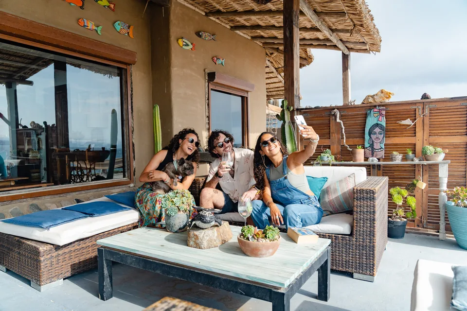

Wi-Fi
En Ajustes → Wi-Fi, elige Chascona-Huespedes.
Clave de ejemplo · DunasDeChoros

Punta de Choros · Guía de tu estadía
Guía de muestra · La red Wi-Fi, los equipos, los horarios y los teléfonos de actividades son ejemplos. Para tu reserva, utiliza las indicaciones del anfitrión.
En Ajustes → Wi-Fi, elige Chascona-Huespedes.
Clave de ejemplo · DunasDeChoros
La casa funciona con energía solar. Evita secadores y otros artefactos de alto consumo.
Retira los residuos de los platos antes de lavarlos. Las aguas grises se reutilizan para el jardín.
Carga combustible en La Serena y trae efectivo. La señal para transferencias puede ser inestable.
Mantén la música a un volumen moderado y cuida el descanso. No ingreses vehículos a playas ni dunas.
La llegada es desde las 15:00. El anfitrión te recibe en la entrada principal y te entrega una llave. Al salir, antes de las 11:00, reúne las llaves y entrégalas al anfitrión en la entrada.
Avistamiento de delfines, pingüinos y lobos marinos.
Teléfono de ejemplo · +56 9 XXXX 0101
Recorrido de historia local con Nicolás.
Teléfono de ejemplo · +56 9 XXXX 0102
Salidas con Capitán Jack Fish.
Teléfono de ejemplo · +56 9 XXXX 0103
Consulta por clases en Playa La Ventana y actividades en la reserva.
Teléfono de ejemplo · +56 9 XXXX 0104
Si necesitas ayuda con la casa o tu estadía, comunícate con Hogar Mágico.
Escribir por WhatsApp Llamar al anfitrión